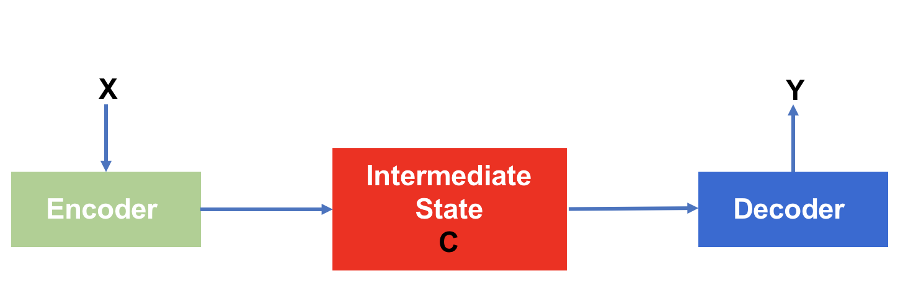
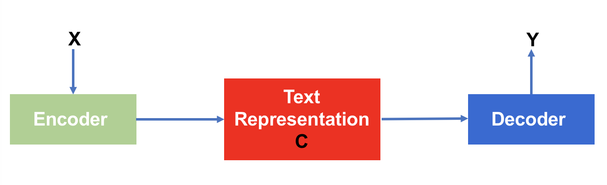
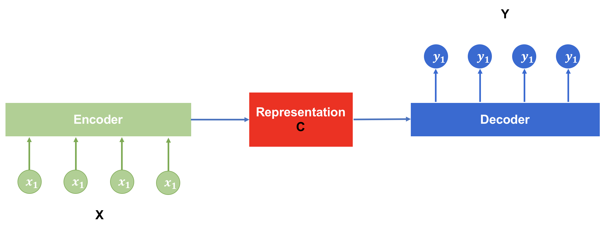
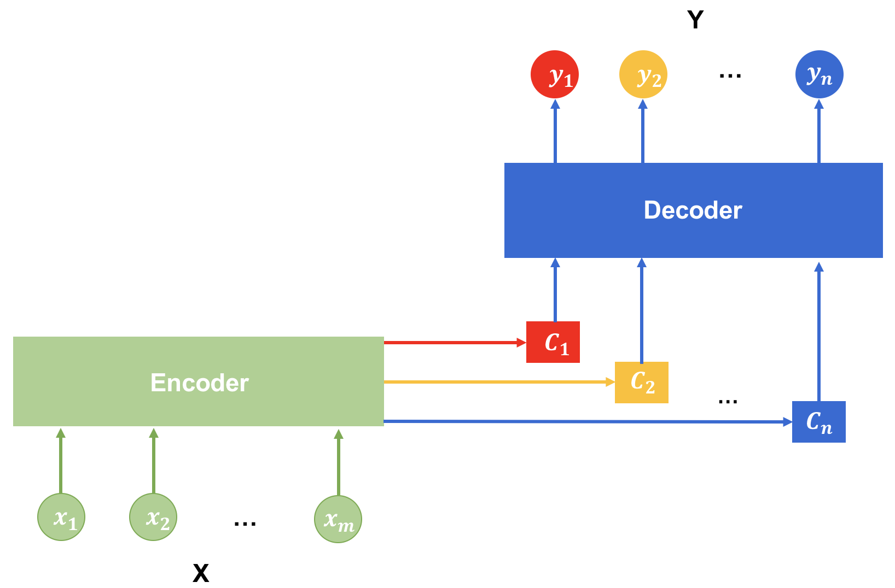
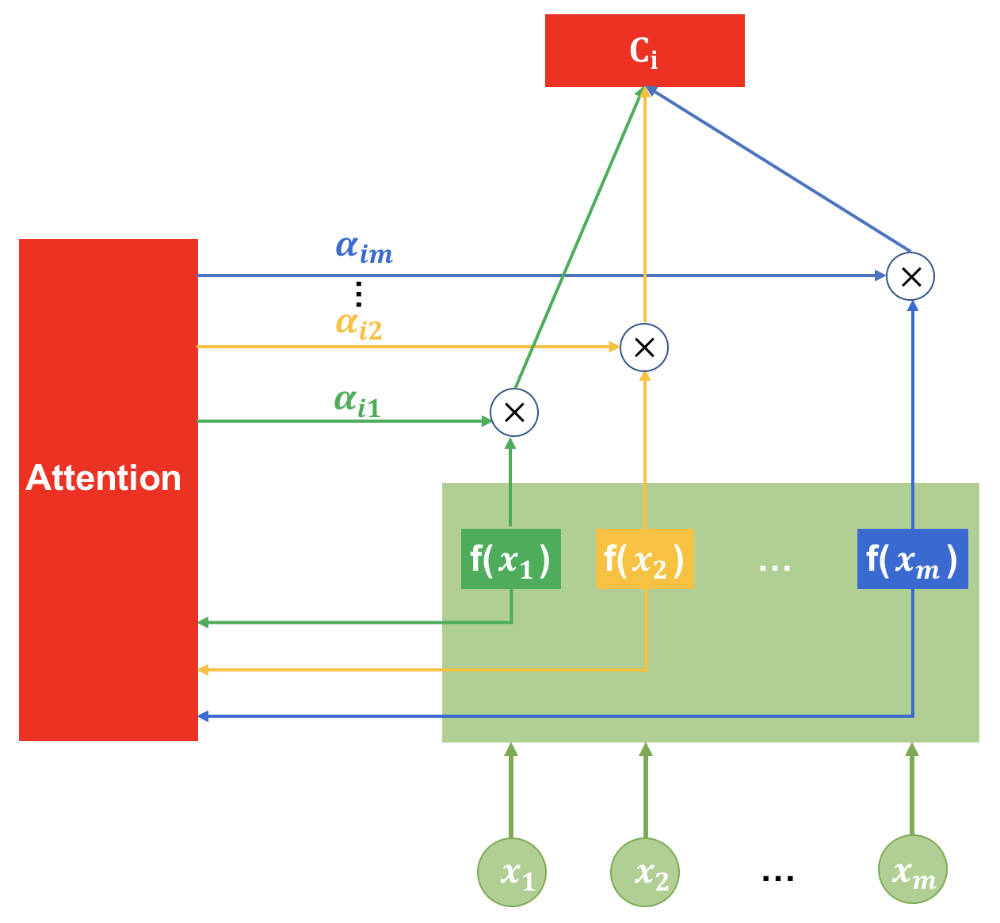
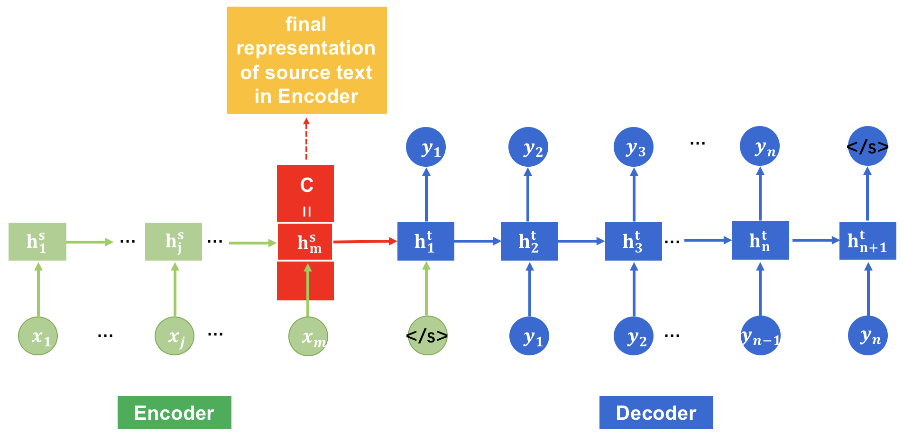
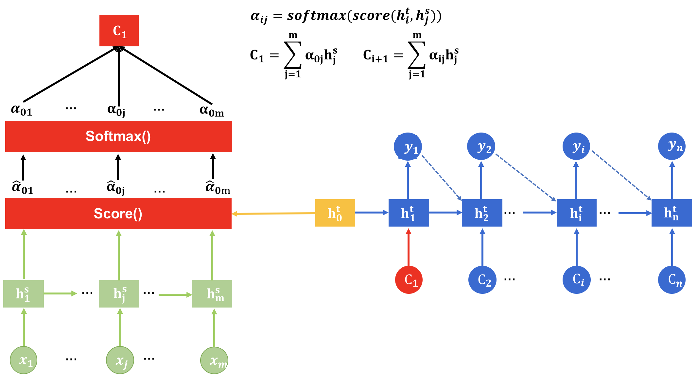
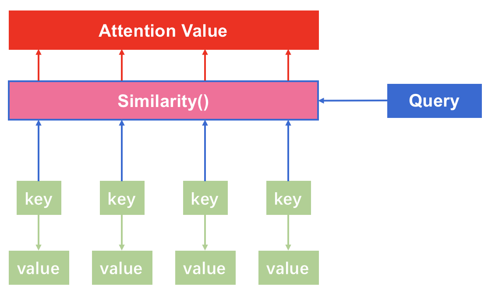
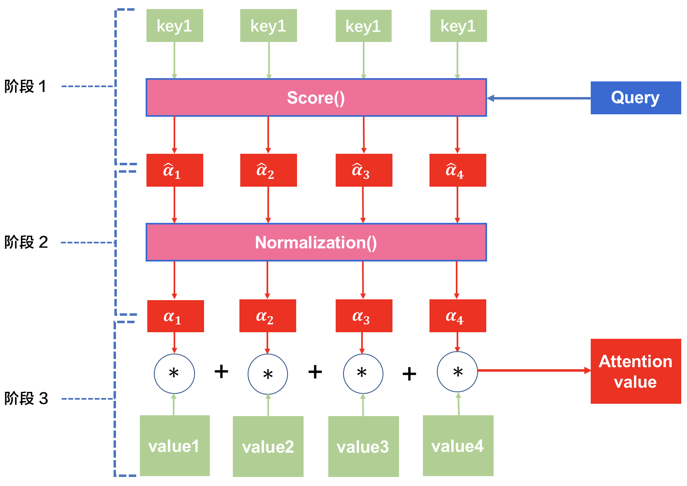
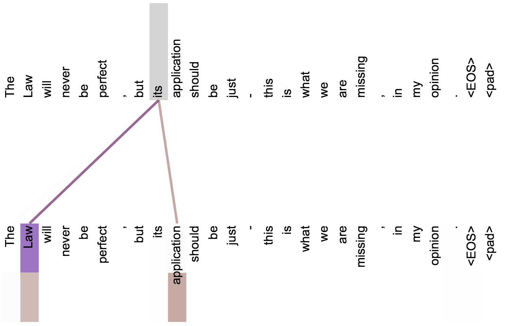

Attention 前传
NLP中Attention的基本思想是：当处理一个句子[^1] 的时候，不是平等地关注句子中所有的部分[^2]，在每个时刻应该有选择地关注最应该关注的部分，而其他部分则相对地忽略。这种对不同部分关注程度不一样的机制就称为“attention”，它是通过赋予句子不同部分不同的权重来实现的：重要的部分权重高；次要的部分权重低。
总而言之，Attention思想的目标是：计算多个不同信息各自重要程度，选出中最重的那部分并加以利用。
NLP 中的 Attention
NLP中Attention思想的使用最初来自于机器翻译领域的一篇paper[^paper1], 使用Encoder-Decoder的框架在机器翻译任务重采用了Attention机制，极大地提升了翻译性能。鉴于Attention最初出现的场景如此，因此下面首先介绍通用Encoder-Decoder框架，然后介绍在自然语言处理领域其具体表现形式，并由机器翻译为切入点详细介绍Attention机制的工作原理、分支、内部模块的实现细节。
Encoder-Decoder
Encoder-Decoder框架本身和Attention机制没有必然联系，它是独立存在的一种框架，而且在NLP研究领域中它出现的要比 Attention 机制早得多。只要一个问题的解决需要将输入数据先转换成一个中间态，然后再将中间态转化为最终结果，这就符合编码器-解码器的范式，就可以在Encoder-Decoder框架之下考虑解决该问题。所谓Encoder-Decoder框架，顾名思义可以这样理解：
- 有一个编码器-Encoder
- 对应有一个解码器-Decoder
- Simplified-Algorithm：
- 将数据 $\mathbf{X}$ 送入Encoder，输出一个编码的结果 $\mathbf{C}$（也就数据的中间态）
- 将 $\mathbf{C}$ 送入Decoder，输出最终结果 $\mathbf{Y}$
一个通用的Encoder-Decoder框架可以由下图来描述：

具体在NLP领域中，中间状态$\mathbf{C}$ 就是所讲的Text Representation(文本表示)或者Text Encoding，在distributed representation的方法论中又叫做Embedding，为行文简化起见，以后在没有歧义的语境中统称为Representation[^3]。其对应的框架图就更加具体一些：

可以看到，只有中间状态发生了变化，即：文本的某种表示（包含了语法、语义、情感等各种信息）。
机器翻译（其他NLP的任务均可转化为此种类型的问题）中，Encoder-Decoder框架图就更加具体：输入 $\mathbf{X}$ 和输出 $\mathbf{Y}$ 均为序列[^4]，且输入为 Source语言（比如：英语）的句子，输出为 Target 语言（比如：汉语）的句子，Text representation $\mathbf{C}$ 通常是sentence representation(sentence embedding)。上面涉及的各个符号也就更加具体，通常为如下所示：
$$
\begin{align}
&\mathbf{X: {x_1,x_2,\dots,x_m}} \text{输入序列}\\
&\mathbf{Y: {y_1,y_2,\dots,y_n}} \text{输出序列}\\
&\mathbf{C}: \text{Text Representation，i.e. 文本表示（数据中间态）}\\
&\textbf{Encoder}: 函数，为线型或非线性。\\
&\textbf{Decoder}: 函数，为线性或非线性。
\end{align}
$$
在这种具体情况下Encoder-Decoder框架入下图所示：

其中各符合含义如之前所示。$\mathbf{x_i}(i=1,\dots,m), \mathbf{y_j}(j=1,\dots,n)$ 是word vector，分别对应source语言和target语言，在distributed representation的语境下，即为：word embedding. $\mathbf{C}$ 是句子的representation，通常为vector[^5] $\in \mathbf{R^h}$.
其实NLP领域中的问题均可以某种程度上转化为机器翻译任务中的这种Encoder-Decoder框架，然后加以解决[^6]。机器翻译/NLP中的Encoder-Decoder可以这样理解：可以把它看作是用于处理由一个词序列（句子，篇章 etc.）生成另一个词序列（句子，篇章 etc.）的通用框架。[^7]
给一个句子对, 记为：$\color{blue}{<Source, Target>}$ ，我们的目标是给定输入句子 $\color{blue}{Source}$, 并通过Encoder-Decoder框架来生成目标句子 $\color{blue}{Target}$. 这里的称为 Source 和 Target 只是表明他们分别是Encoder-Decoder的输入输出，它们可以是同一种语言，也可以是不同语言；可以是机器翻译的场景，也可以是SRL、Text entailment的场景。Source 和 Target 分别由各自的单词序列构成：
$$
\begin{align}
&\color{blue}{Source}={\mathbf{x_1,x_2,\dots,x_m} }\\\
&\color{blue}{Target}={\mathbf{y_1,y_2,\dots,y_n} }
\end{align}
$$
所谓Encoder，顾名思义就是对输入句子Source进行编码，将输入句子通过一系列非线形变换转化成为中间状态-representation:
$$
\mathbf{C=E(x_1,x_2,\dots,x_m)}
$$
解码器Decoder的任务是，根据Source 的representation $\mathbf{C}$ 和之前Decoder端已经生成的历史信息 $\mathbf{y_1,y_2,\dots,y_{i-1}}$ 生成$i$ 时刻要生成的单词 $\mathbf{y_i}$ ：
$$
\mathbf{y_i=D(y_1.y_2,\dots,y_{i-1}, C)}
$$
每个 $y_i$ 都这样依次产生，这个过程迭代进行最终生成 Target= ${\mathbf{y_1,y_2,\dots,y_n}}$ 。那么整体看来，就是整个系统根据 Source句子生成了目标句子Target。如果Source句子是中文，Target是英文，那么这就是解决机器翻译问题的Encoder-Decoder框架；如果Source是一个包含的文本或句子，Target 是带有entity B-I-O的文本，这就是解决实体抽取问题的Encoder-Decoder框架；如果Source是一篇文章，Target是概括性的几个句子，这就是解决文本摘要的Encoder-Decoder框架；如果Source是一句问句，Target 是一个回答，这就是解决QA问题的Encoder-Decoder框架……
无论Encoder 还是 Decoder，其本质就是一个函数，只不过这是一个复杂的多重复合/嵌套 函数，通过对数据多次的非线性及线型变换，分别做编码和解码而已。在Neural Networks-based 的模型中，Encoder和Decoder 可以分别是RNN，LSTM，GRU，CNN及各种composition-based neural networks等等，只不过Encoder 和 Decoder 均为RNNs的情况比较多而已，RNNs的使用并其无必然性。
结合本文最初讲的通用Encode-Decoder框架，不难理解其实其他模态的数据比如：音频、视频、图像、时间序列数据等均可以在这个框架下进行处理。常见的应用有：语音识别，Image Caption，Visual QA 等等。可见，Encoder-Decoder框架的用途是极其广泛的。
为简化起见，之后的例子均假设选择RNNs作为Encoder和Decoder。
Attention Model
本节先介绍在机器翻译任务中最为常见的Soft Attention模型的基本原理，之后抛开Encoder-Decoder框架抽出Attention的本质思想，解释Attention机制作为一个独立存在的必要性及合理性，并介绍自17年以来非常火的Self-Attention的思想。
之前讲的Encoder-Decoder框架是没有结合Attention的，为也就是它没有明确地将“不同部分信息的重要性不同”这一因素专门考虑并融合到框架中。请观察其 Target句子的生成过程：
$$
\begin{align}
& \mathbf{y_1 = D(\color{blue}{C}) }\\
& \mathbf{y_2 = D(y_1,\color{blue}{C})}\\
& \mathbf{y_3 = D(y_1,y_2,\color{blue}{C})}\\
& \cdots \\
& \mathbf{y_n = D(y_1,y_2,\dots,y_{n-1},\color{blue}{C})}
\end{align}
$$
其中D就是Decoder，也即用来解码的非线性函数。从上式可以看出，无论生成Target句子的那一个word，Decoder使用的Source句子的表示 $\mathbf{\color{blue}{C}}$ 是一样的，没有任何区别。
而表示 $\mathbf{C}$ 是根据 Source句子的每个单词经过Encoder 编码生成的，本质上 $\mathbf{C}$ 是作为生成Target单词时的Context 被Decoder考虑并加入到解码器的非线性函数 $\mathbf{D}$ 中。换句话说，现有框架下在生成 Target句子中的每个单词的时候考虑的 Context 是一样的，Source句子中的每个单词对每个 $\mathbf{y_j}$ 贡献是相同的[^8]。显然这是比较违反直观的，直观和经验上都告诉我们：同一个句子、篇章、文档中的不同的词在不同时刻的重要性显然不应该相同。
以机器翻译问题为例就可以很清晰地看到这一点：
比如现在要将英语句子 Source=”Tom chase Jerry.” 翻译成中文句子 Target=”汤姆追逐杰瑞”，在Encoder-Decoder框架下，是逐步生成中文单词[^9] “汤姆” “追逐” “杰瑞”。 在翻译“杰瑞”这个中文单词的时候， 之前讲的Encoder-Decoder模型中，每个英文单词对于翻译Target 单词的贡献是相同的，这显然是不对的。在翻译Target单词 “杰瑞”的时候，显然 Source单词 “Jerry” 提供了最重要的信息，而“Tom” 和 “chase” 相对次要的多。因此，对于“在时刻$i$ ,Source句子中不同单词的重要性是不相同的” 这一现象进行针对性地建模，使得我们每生成一个Target 单词的时候都能对Source句子中最重要的单词给予更多的关注从而提升翻译性能，是十分必要的。这个显示的建模方法就是 Attention机制。
当句子较短的时候，没有Attention机制的Encoder-Decoder模型问题还不大，毕竟dependency较短，将Source句子编码为一个表示 $\mathbf{C}$ 还不至于损失过多的有用信息。但如果句子较长，dependency距离太远，此时Source句子的所有信息都编码为 $\mathbf{C}$ ，就会损失较多的语法、语义信息，对翻译很不利。此时，单词自身的信息已经消失，可想而知会损失很多细节信息，而 Attention 机制让我们有了第二次[^10]利用 Source句子的机会，让我们将编码阶段Encoder “损失的信息” 利用起来。
上面的翻译过程，如果引入 Attention机制的话，在翻译 ”杰瑞“ 的时候应该体现英文单词对于 “杰瑞” 重要程度的不同，比如给出一个类似下面的权重分布值（概率分布）：
（Tom，0.2）（chase, 0.3）（Jerry, 0.5）
每个英文单词的权重值，代表了Attention机制分配给每个英文单词的注意力大小。这对于正确翻译单词是有帮助的，因为引入了新的信息使得最相关部分占比最大。
同理，Target句子中的每个单词都应该有其对应的Source句子中单词的注意力分配权重的概率分布信息。这就以为着：每生成一个 Target单词 $\mathbf{y_i}$ , 原先都是相同且不变的“通用”表示(Context) $\mathbf{\color{blue}{C}}$ 会被替换成随着每个 Target单词 $\mathbf{y_i}$ 不断变化着的动态表示(Context) $\mathbf{\color{blue}{C_i}}$. 这就是理解 Attention的关键，即：由固定的中间Representation $\mathbf{C}$ 换成了由Attention机制根据当前输出单词 $ \mathbf{y_i}$调整成的变化的 $\mathbf{C_i}$ 。
引入 Attention机制的Encoder-Decoder 框架如下图所示：

生成Target句子单词的过程变成如下所示：
$$
\begin{align}
&\mathbf{y_1=D(\color{blue}{C_1})}\\
&\mathbf{y_2=D(y_1,\color{blue}{C_2})}\\
&\mathbf{y_3=D(y_1,y_2,\color{blue}{C_3})}\\
&\cdots \\
&\mathbf{y_n=D(y_1,\dots,y_n,\color{blue}{C_n})}
\end{align}
$$
其中每个 $\mathbf{\color{blue}{C_i}}$ 代表Source句子中每个单词的注意力分配概率分布，对比上面的英汉翻译来讲，其对应的信息可能如下：
$\mathbf{\color{blue}{C_1}}$= $\mathbf{C}$(“汤姆”) = g( 0.6$\ast$f(“Tom”)， 0.3$\ast$f(“chase”)， 0.1$\ast$f(“Jerry”) )
$\mathbf{\color{blue}{C_2}}$= $\mathbf{C}$(“追逐”) = g( 0.2$\ast$f(“Tom”)， 0.6$\ast$f(“chase”)， 0.2$\ast$f(“Jerry”) )
$\mathbf{\color{blue}{C_3}}$= $\mathbf{C}$(“杰瑞”) = g( 0.1$\ast$f(“Tom”)， 0.2$\ast$f(“chase”)， 0.7$\ast$f(“Jerry”) )
其中 f 代表Encoder中将Source句子中的单词转化为其word representation的函数，比如常见的采用RNN的Encoder中，f 就是RNN在某个时刻 t 的隐层输出$h_t$ . 实际使用过程中可以采用各种不同的函数来代替RNN都是可以的，区别无非是该函数表示能力强弱的问题；g 代表Encoder根据每个单词的word representation合成整个句子representation的函数[^11], 现在普遍做法中，g 函数就是对构成元素进行加权求和，即：
$$
\mathbf{\color{blue}{C_i = \sum_{j=1}^{L_s}\alpha_{ij}h_j}}
$$
其中，$L_s$ 表示Source句子的长度，$\mathbf{C_i}$ 表示当翻译Target单词$\mathbf{y_i}$ 是的Context，即此刻Source句子的representation，$\mathbf{h_j}$ 是Encoder处理Source句子中第$\mathbf{j}$个单词时得到的representation（$\color{Red}{!!}$ 这里往往不仅仅是Source句子中地$\mathbf{j}$个单词的表示，因为这个表示可能包含了之前各个单词的implict information，比如在使用RNNs的Encoder中。因此，更准确的说法是：$\mathbf{h_j}$ 是Encoder在时刻$\mathbf{t=j}$ 时对Source句子的表示 ）, $\mathbf{\alpha_{ij}}$ 代表在翻译Target句子中第 $\mathbf{i}$ 个单词时候由Attention机制分配给Source句子中第 $\mathbf{j}$ 个单词的注意力分配权重。
数学公式对应的过程如下图所示：

现在还有一个问题：生成Target句子的某个单词，比如“汤姆”的时候，Attention机制是如何给Source句子中的单词分配注意力权重的概率分布呢？为了说明这个问题，我们需要细化Encoder-Decoder框架，在一种具体的配置中解释这个问题。我们选择Encoder和Decoder短都使用RNN来举例，采用RNN的引入Attention机制的Encoder-Decoder框架如下：

其中 $\mathbf{h_j^s}$ 是RNN在Source句子中第$\mathbf{j}$ 个时刻/单词的隐层表示，$\mathbf{h_i^t}$ 是Target句子第 $\mathbf{i}$ 个时刻[^12]的隐层表示。$\mathbf{h_m^s}$ 是Source句子最后一个时刻 RNN的隐层表示，也即：整个Source句子在Encoder端的最终representation $\mathbf{C}$。$\mathbf{}$ 是句子标志句子结束的符号。
在上述框架下，Attention机制生成对Source句子中单词的权重概率分布的过程如下所示：

其中，$\mathbf{\hat\alpha_{ij}}$ 是Decoder端生成Target句子第$\mathbf{i}$ 个单词时，在Encoder端对Source句子中第 $\mathbf{j}$ 个单词分配的注意力权重，$\mathbf{\alpha_{ij}}$ 是经过$\mathbf{sofrmax()}$ 归一化之后的$\mathbf{\hat\alpha_{ij}}$，$\mathbf{C_i}$ 含义同前文。$\mathbf{score()}$ 是一个打分函数，计算Decoder端的向量$\mathbf{h_i^t}$ 与Eecoder端的$\mathbf{h_j^s}$ 的相关分数。$\mathbf{h_0^t}$ 是在Decoder端的“第一个”向量，用它来生成第一组注意力权重分配的概率分布，其通常由2种方式生成：
- 随机初始化，通过然后通过整个Encoder-Decoder的训练过程fine-tuned。
- 通过其他手段对Source句子进行表示，将得到的表示赋予 $\mathbf{h_0^t}$ . 最终随同Encoder-Decoder 一起训练。其他别的手段通常为：
- 另一个RNNs, e.g. BiLSTM, LSTM, GRU, other Gated NNs…
- CNNs
- Unsupervised Sentence Embeddings
- Knowledge Base generated representation.
得到$\mathbf{h_0^t}$ 之后，通过 $\mathbf{\hat\alpha_{ij}=score(h_i^t, h_j^s)}$ [^13]再经过$\mathbf{softmax()}$ 从而可以得到最终的注意力权重分配分布$\mathbf{\alpha_{ij}}$。现在就剩最后一个问题了，$\mathbf{score()}$ 函数长什么样子？
$$
\mathbf{\color{blue}{score(u,v)}}=
\begin{cases}
u^Tv, &\text{dot product.}\\
u^T W_a v, &\text{bilinear, also called general.}\\
\omega^Ttanh(W_a[u;v])\ or\ \omega^Ttanh(W_u u + W_v v), &\text{1 layer MLP(i.e. concat)}
\end{cases}
$$
公式中 $W_a, \omega ,W_u,W_v$ 都是参数，与整个网络一起训练。
绝大多数Attention模型都是采用上述框架和流程计算注意力分配权重的概率分布，从而达到多次利用Source句子的重要信息提升任务性能。
以上就是经典的Soft Attention模型，如何理注意力分配权重的概率分布呢？在机器翻译的任务中，$\mathbf{score(h_i^t, h_j^s)}$ 理解为Target句子中第$\mathbf{i}$ 个单词与 Source句子中第 $\mathbf{j}$ 个单词的对齐概率，因此一些文章中也常常把$\mathbf{score()}$ 写成 $\mathbf{align()}$. 所谓对齐，就是说在生成的Target句子中某个单词与Source句子中的哪个或哪些单词是对应的；概率越大，说明越可能有对应关系。
Attention的本质是什么？
将面讲过，Attention是独立于Encoder-Decoder框架的存在，单独提出来思考有利于把握Attention的本质思想。在[^paper3] 这Google Brain团队的这篇名文中，作者有一段经典描述现引用如下：
An attention function can be described as mapping a query and a set of key-value pairs to an output,
where the query, keys, values, and output are all vectors. The output is computed as a weighted sum
of the values, where the weight assigned to each value is computed by a compatibility function of the
query with the corresponding key.
引文点明了Attention的本质思想，可以通过下图来理解：

如上图所示，我们可以这样来看待Attention机制：
将Source句子看作是由一系列 key-value 对儿组成，每个对儿对应着Source句子中的一个单词。此时给定Target中某个元素Query，计算Query 与 Source端每个key 的相似性或相关性，即得到每个key对应value的权重系数，然后将Source端所有value值加权求和，即得到最终的Attention值。所以，Attention机制本质上是对Encoder端Source句子中的Unit Information(word embedding)进行加权求和，而用Query和key来计算value的权重; 权重大的意味着其对应的value(information)对于生成Target 相对重要，权重小的，意味其信息相对不那么重要。这个本质思想可以总结为以下公式：
$$
\mathbf{Attention(\color{blue}{Query, Source})} = \sum_{i=1}^{L_s} \mathbf{Similarity(\color{blue}{Query, key_i})\ast value_i}
$$
其中，$\mathbf{L_s}$ 是Source句子长度。在之前用来举例的机器翻译任务中，Key 和 value相同，指的是同一个东西即：key=value ，导致不能轻易地看出这种本质思想。
另外一种理解是，将Attention机制看作是一种软寻址(Soft Adressing)：Source 可以看作存储器的内容，元素由地址 key 和值 value组成，当前有一个 key=Query的查询，目的是取出存储器中对应的 value值。通过Query和存储器中的每个key的相关性来寻址，之所以说是软寻址，是因为不像一般的寻址只取出一个地址匹配的值，而是可能从每个key地址中都取出内容，取出内容的重要性由Query 和key 的相关性决定，之后对所有key地址对应的value值进行加权求和，权重即对应的相关系数，最终得到的结果即为 Attention值。不少科研人员将 Attention机制看作Soft-Adressing的特例，也是有其道理的。
Attention的计算过程在上一节已经见过，下面脱离Encoder-Decoder框架做一次总结。绝大部份Attention的计算过程可以归纳为2个过程：1）根据Query 和 key 计算权重系数；2）更具权重系数对value值进行加权求和。 第一个过程又分为2个阶段：确定Query；计算Query与key的相关性。可以将Attention的计算过程抽象为如下图所示的3个阶段：

- 确定Target中的Query（上一节提到的$\mathbf{h_0^t}$ ）
- 随机初始化
- 通过其他表示手段得到，e.g. RNNs, CNNs, Unsupervised Embedding, KB-based representation.
- 计算$\mathbf{similarity()}$
- score(), 有3种常见方式（见上小节）
- normalization
- softmax()
- smooth
- 根据权重系数对value值进行加权求和，即：
$$
\mathbf{Attention(\color{blue}{Query, Source})}=\sum_{i=1}^{L_s} \color{blue}{\alpha_i }\ast value_i
$$
只不过，在NLP大多数任务中，key-value 对儿中的key和value是相同的，即：key = value。这在大多数任务的实现中可以明显地看到这一点。大家在实现自己模型的时候注意到这一点即可。
Self-Attention
Self-Attention 也被称为Intra Attention, 2017年初开始获得了极为广泛地应用，比如 Google的机器翻译[^paper3] ，自然语言理解，语义角色标注（SRL）[^paper4] 等等。
传统的Attention计算过程涉及Target和Source两个方面，需要 Target中的元素 Query 与Source中的每个元素进行计算才能得到。这在Encoder-Decoder 框架下的机器翻译任务中很好理解，这时Target和Source是不同的， 其本质为：Target句子中的元素与 Source句子中元素的对齐程度/概率。
那如果一个NLP任务的 Target 和 Source 相同呢，或者根本就不符合Encoder-Decoder框架的形式而没有所谓的Source 和 Target呢？这个时候就可以使用Self-Attention。顾名思义，Self-Attention指的是在句子内部元素之间进行Attention值的计算，比如：在Source句子内部或者Target句子内部元素之间计算Attention Value。可以理解为传统Attention机制中Source=Target的特殊情况。
其实，我们也很容易将Self-Attention机制引入传统Encoder-Decoder框架，即：除在Target 和 Source之间计算Attention之外，分别在Source元素之间和Target元素之间再次进行Self-Attention计算。
下图可视化地表示了 Self-Attention机制在句子内部究竟学到了什么特征或者提供了什么informative的信息：

图中展示了Self-Attention可以捕获到句子中单词间的语法特征（短语结构：making….more difficult）

上图中展示了Self-Attention 可以捕获句子中单词间的语义特征（指代关系：its 指代 Law 的 Application）
很明显可以看出： Self-Attention可以捕获长距离依赖关系(long dependency), 可以避免RNNs需要不断叠加之前时刻的信息到当前时刻所带来的特征交错复杂难以学习的问题；Self-Attention计算的时候，句子中的任意两个元素直接两两计算权重，单词间距离远近没有影响，不需要像RNNs模型那样等待之前时刻都计算结束才能进行当前时刻的计算，因此可以并行计算提高效率，这是Self-Attention模型的极大优势；相比于CNNs的model，它不需要非常多的kernel所带来的太多参数，也不会有不同的卷积窗overlap所带来的特征组合过于复杂的问题，难以学习到句子中单词间清晰的依赖关系，因此不能很好学到语法结构。
Conclusion
Attention机制已经成为NLP领域的一个dominant方法，最新发展是基于 Self-Attention模型的各种变种以及与其他模型如：传统的Attention，LSTM，Bi-LSTM，CNN，Reinforcement Learning等相结合，得到各种组合模型并应用到NLP的各个任务中。2018年的此时此刻，Attention模型依然在发挥着巨大的威力，目前来看能和它匹配的模型就数基于 reinforcement learning 的模型了。个人预测2018年这两种方法依然会是dominant的方法，值得深入研究并迅速占领还没有尝试过的组合，切入到一个具体的NLP任务上出paper!
另外一个新兴起的model是Hinton大神的Capsule，其在NLP领域的应用还非常少，截止2018年4月4日，目前只发现2篇paper采用Capsule做NLP任务，一篇是www2018年上的情感分类文章，另一个是做Text classification的文章，这个方向也非常值得关注！！
PS: Attention权重的概率分布计算下标说明
不同的具体实现对使用Decoder端Target句子的哪个时刻隐层表示来与Encoder端Source句子的每个时刻的表示进行score()计算来得到权重概率分布的选择不一，因此下标往往不统一。在生成Target句子的第$\mathbf{i}$个单词的时候， 有些[^paper1]采用Target句子第$\mathbf{h_{i-1}^t}$ 与Source句子的每个单词表示进行计算，得到注意力权重分配的概率分布；有些[^paper2]采用$\mathbf{h_i^t}$ 来计算。所以在下标的确认过程中万一感到混乱，往往是没弄清楚作者是用前一时刻 or 当前时候的 hidden state去计算注意力权重概率分布的，弄清楚这一点，就不会感到下标混乱了。
致谢
本文主要参考内容为：
- 张俊林博士的文章- 《深度学习中的注意力机制》文章链接
- 罗凌同学的文章 - 《自然语言处理中的自注意力机制（Self-Attention Mechanism）》文章链接
- 苏剑林同学的文章- 《一文读懂「Attention is All You Need」| 附代码实现》文章链接
- Blog-Attention Mechanism
Reference and Concept Explanation
[^1]: 通常是句子，也可以是paragraph，document 等不同粒度的token(word, char, etc.) sequence；还可以是dependency tree等树结构。
[^2]: 一个character，token，entity，phrase，sentence，paragraph 等语言单元均可，这里用单词是因为单词是最常见的语言单元，为简化起见。
[^3]: 有些文章中也叫做Semantic representation or Semantic Encoding，但是我们知道自然语言中学习到的表示通常不仅包含Semantic，也同时包含Syntactic information，Sentiment information等其他信息。因此这里采用一个更加粗粒度的说法：Text representation。
[^4]: 通常为word sequenc，也可以是character sequence 或者其他的sequence。比如在 entity extraction的任务重，就是B-I-O标签的sequence，在SRL 和 POS Taging中是其他类型的序列。
[^5]: 也可以是一个matrix或者多维的tensor，视具体的应用及模型而定。
[^6]: 据不记得名字的某个大牛说过：专业的NLPer遇到NLP中的问题，自然会转化为序列问题看待，即使原问题形式上不会一个序列问题。
[^7]: 这里的词序列只是最常用的一种情况，实际上可以是任何的token sequence，比如：character，tag，label等的不同粒度语言单元的序列。
[^8]: 严格来讲，这样说不完全正确，因RNNs在对Source句子进行编码的时候其实implicitly地考虑了不同词的重要性。这是由RNNs网络本身的特性决定的；只是没有“郑重”地将这个问题建模而已。
[^9]: 英文的word对应中文的词，character 对应中文的字。
[^10]: 第一次利用整个句子是在Encoder阶段。
[^11]: g的功能是将每个单词的表示合成整个句子的表示，因此可以叫做 composition function。
[^12]: 在不同的具体实现中，在Decoder端i 时刻不一定是Target句子生成第i 个单词，也可能是第i-1 个单词。这仅仅是实现细节上的区别，不影响整个的理论框架。
[^13]: 这里注意本文最后的部分，对下标进行说明。
[^paper1]: 《Neural Machine Translation by jointly Learning to Align and Translate》Bahdanau et al., ICLR, 2015.
[^Paper2]: 《Effective Approaches to Attention-based Neural Machine Translation》Luong et al., EMNLP, 2015.
[^paper3]: 《Attention is all you need》Vaswani et al., NIPS, 2017.
[^paper4]: 《Deep Semantic Role Labeling with Self-Attention》Tan et al., AAAI, 2018.